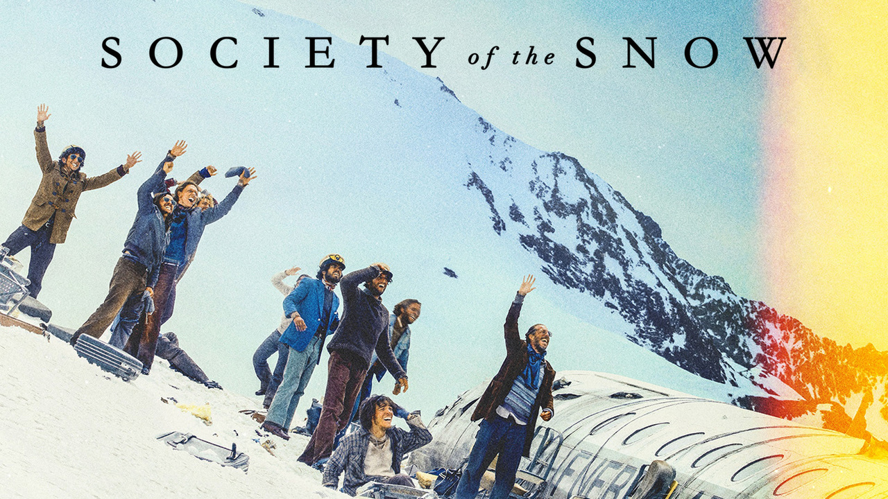

Society of the Snow is a 2023 survival thriller film directed by J. A. Bayona, centered around the Uruguayan 1972 Andes flight disaster. It is an adaptation of Pablo Vierci's book of the same name,which documents the accounts of all 16 survivors of the crash, many of whom Vierci knew from childhood. The cast is composed of Uruguayan and Argentine actors, most of whom are newcomers.
The film closed the 80th Venice International Film Festival in an Out of Competition slot.It was theatrically released in Uruguay on 13 December 2023,in Spain on 15 December 2023, and in the US on 22 December 2023, before streaming on Netflix on 4 January 2024.
In 1972, the Uruguayan Air Force flight 571, chartered to transport a rugby team to Santiago, Chile, experiences an unexpected incident and crashes into a glacier in the heart of the Andes. Of the 45 passengers on board, only 16 manage to survive. Trapped in one of the most inaccessible and hostile environments on the planet, they are forced to resort to cannibalism to stay alive. Their survival will depend on the decisions they make in the midst of this desperate situation.
The film was set as the 80th Venice International Film Festival's closing film, with a world premiere out-of-competition screening at the Palazzo del Cinema slated for 9 September 2023, following the festival's awards ceremony.